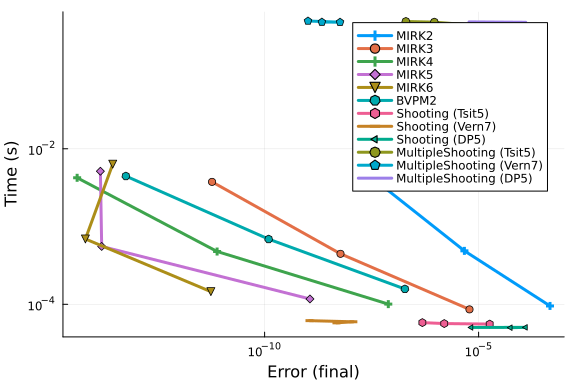
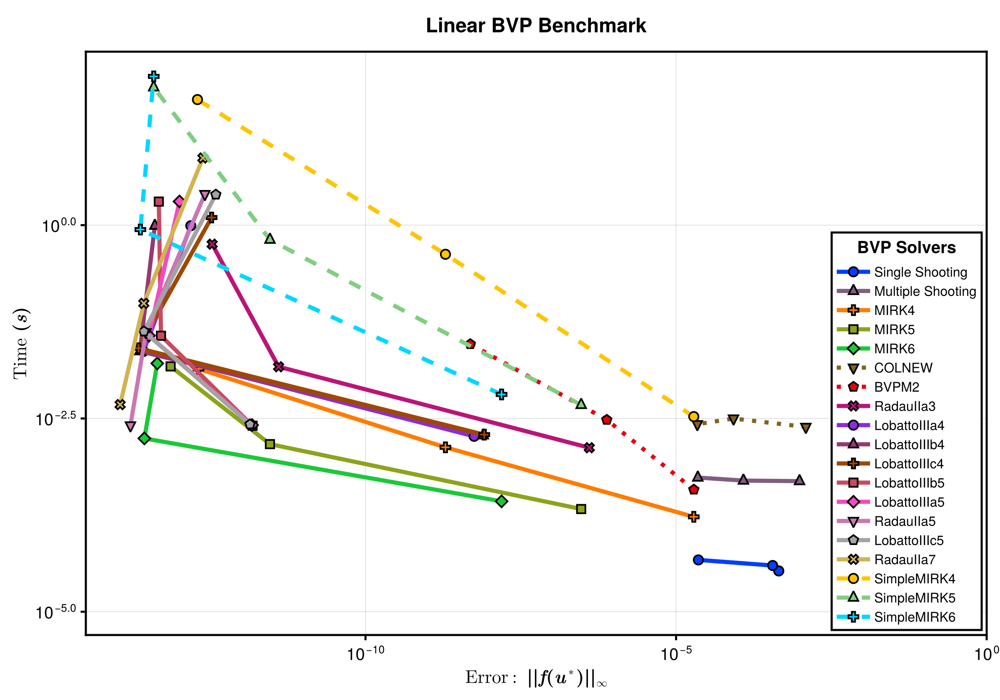
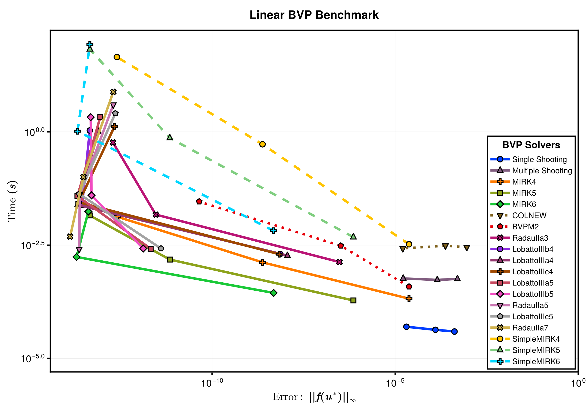
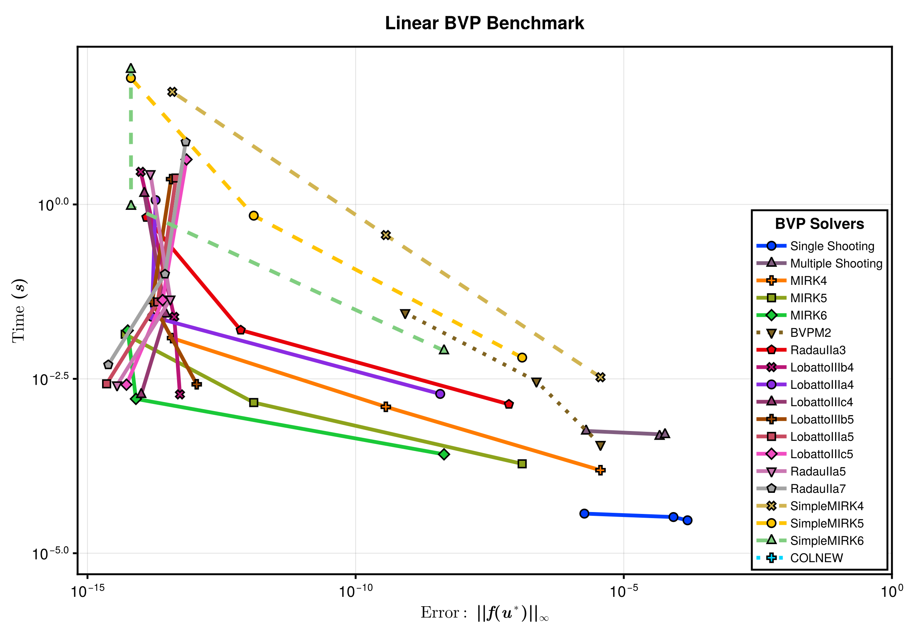
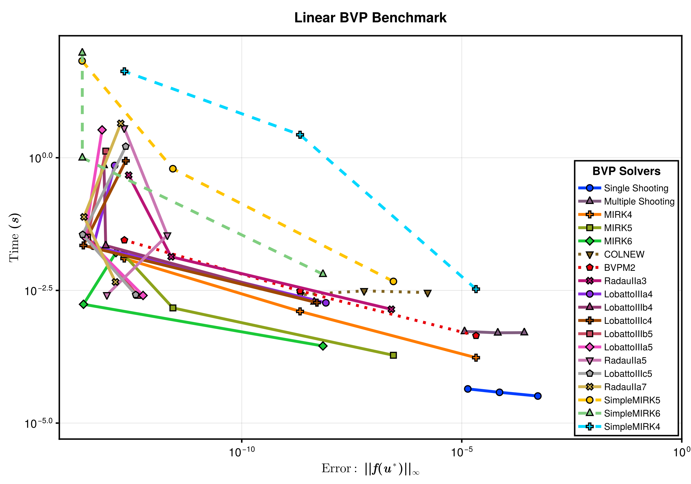
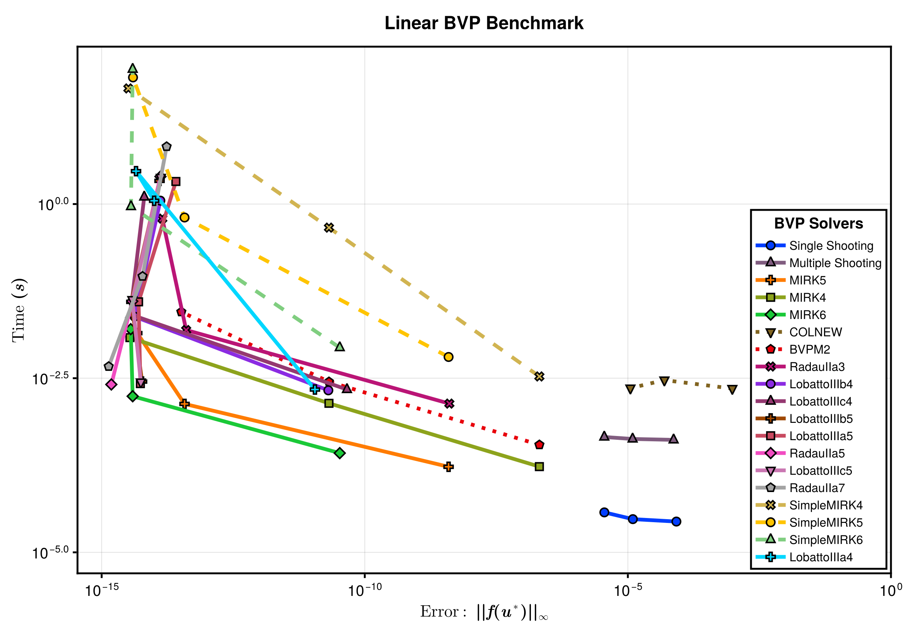
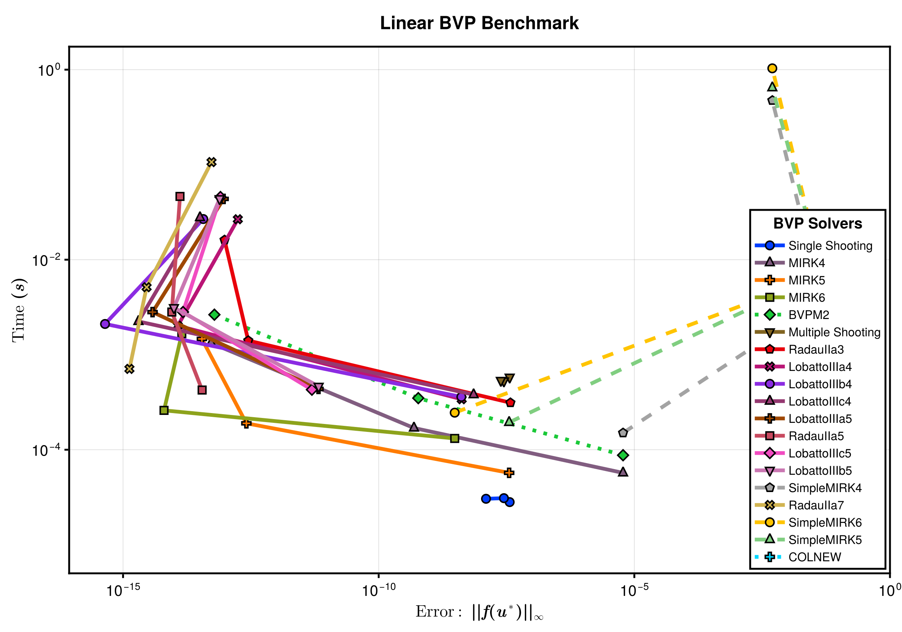

Linear BVP Benchmarks
This benchmark compares the runtime and error of BVP solvers, including MIRK solvers, Shooting solvers and FORTRAN BVP solvers on some linear boundary value problems. The testing BVPs are a set of standard BVP test problems as described here
Setup
Fetch required packages.
using BoundaryValueDiffEq, OrdinaryDiffEq, ODEInterface, DiffEqDevTools, BenchmarkTools, BVProblemLibrary, PlotsSet up the benchmarked solvers.
setups = [ Dict(:alg=>MIRK2(), :dts=>1.0 ./ 10.0 .^ (1:4)),
Dict(:alg=>MIRK3(), :dts=>1.0 ./ 10.0 .^ (1:4)),
Dict(:alg=>MIRK4(), :dts=>1.0 ./ 10.0 .^ (1:4)),
Dict(:alg=>MIRK5(), :dts=>1.0 ./ 10.0 .^ (1:4)),
Dict(:alg=>MIRK6(), :dts=>1.0 ./ 10.0 .^ (1:4)),
Dict(:alg=>BVPM2(), :dts=>1.0 ./ 7.0 .^ (1:4)),
Dict(:alg=>Shooting(Tsit5())),
Dict(:alg=>Shooting(Vern7())),
Dict(:alg=>Shooting(DP5())),
Dict(:alg=>MultipleShooting(10, Tsit5())),
Dict(:alg=>MultipleShooting(10, Vern7())),
Dict(:alg=>MultipleShooting(10, DP5())),]
labels = ["MIRK2";
"MIRK3";
"MIRK4";
"MIRK5";
"MIRK6";
"BVPM2";
"Shooting (Tsit5)";
"Shooting (Vern7)";
"Shooting (DP5)";
"MultipleShooting (Tsit5)";
"MultipleShooting (Vern7)";
"MultipleShooting (DP5)"];Sets tolerances.
abstols = 1.0 ./ 10.0 .^ (1:3)
reltols = 1.0 ./ 10.0 .^ (1:3);Benchmarks
We here run the BVP benchmarks for all the MIRK methods, single Shooting method and FORTRAN BVP solvers.
Linear boundary value problems
Linear BVP 1
prob_1 = BVProblemLibrary.prob_bvp_linear_1
sol_1 = solve(prob_1, Shooting(Vern7()), abstol=1e-14, reltol=1e-14)
testsol_1 = TestSolution(sol_1)
wp_1 = WorkPrecisionSet(prob_1, abstols, reltols, setups; names = labels, appxsol = testsol_1, maxiters=Int(1e5))
plot(wp_1)
Linear BVP 2
prob_2 = BVProblemLibrary.prob_bvp_linear_2
sol_2 = solve(prob_2, Shooting(Vern7()), abstol=1e-14, reltol=1e-14)
testsol_2 = TestSolution(sol_2)
wp_2 = WorkPrecisionSet(prob_2, abstols, reltols, setups; names = labels, appxsol = testsol_2, maxiters=Int(1e5))
plot(wp_2)
Linear BVP 3
prob_3 = BVProblemLibrary.prob_bvp_linear_3
sol_3 = solve(prob_3, Shooting(Vern7()), abstol=1e-14, reltol=1e-14)
testsol_3 = TestSolution(sol_3)
wp_3 = WorkPrecisionSet(prob_3, abstols, reltols, setups; names = labels, appxsol = testsol_3, maxiters=Int(1e4))
plot(wp_3)
Linear BVP 4
prob_4 = BVProblemLibrary.prob_bvp_linear_4
sol_4 = solve(prob_4, Shooting(Vern7()), abstol=1e-14, reltol=1e-14)
testsol_4 = TestSolution(sol_4)
wp_4 = WorkPrecisionSet(prob_4, abstols, reltols, setups; names = labels, appxsol = testsol_4, maxiters=Int(1e4))
plot(wp_4)
Linear BVP 5
prob_5 = BVProblemLibrary.prob_bvp_linear_5
sol_5 = solve(prob_5, Shooting(Vern7()), abstol=1e-14, reltol=1e-14)
testsol_5 = TestSolution(sol_5)
wp_5 = WorkPrecisionSet(prob_5, abstols, reltols, setups; names = labels, appxsol = testsol_5, maxiters=Int(1e4))
plot(wp_5)
Linear BVP 6
prob_6 = BVProblemLibrary.prob_bvp_linear_6
sol_6 = solve(prob_6, Shooting(Vern7()), abstol=1e-14, reltol=1e-14)
testsol_6 = TestSolution(sol_6.t, sol_6.u)
wp_6 = WorkPrecisionSet(prob_6, abstols, reltols, setups; names = labels, appxsol = testsol_6, maxiters=Int(1e4))
plot(wp_6)
Linear BVP 7
prob_7 = BVProblemLibrary.prob_bvp_linear_7
sol_7 = solve(prob_7, Shooting(Vern7()), abstol=1e-14, reltol=1e-14)
testsol_7 = TestSolution(sol_7)
wp_7 = WorkPrecisionSet(prob_7, abstols, reltols, setups; names = labels, appxsol = testsol_7, maxiters=Int(1e4))
plot(wp_7)
Linear BVP 8
prob_8 = BVProblemLibrary.prob_bvp_linear_8
sol_8 = solve(prob_8, Shooting(Vern7()), abstol=1e-14, reltol=1e-14)
testsol_8 = TestSolution(sol_8)
wp_8 = WorkPrecisionSet(prob_8, abstols, reltols, setups; names = labels, appxsol = testsol_8, maxiters=Int(1e4))
plot(wp_8)
Linear BVP 9
prob_9 = BVProblemLibrary.prob_bvp_linear_9
sol_9 = solve(prob_9, Shooting(Vern7()), abstol=1e-14, reltol=1e-14)
testsol_9 = TestSolution(sol_9)
wp_9 = WorkPrecisionSet(prob_9, abstols, reltols, setups; names = labels, appxsol = testsol_9, maxiters=Int(1e4))
plot(wp_9)
Linear BVP 10
prob_10 = BVProblemLibrary.prob_bvp_linear_10
sol_10 = solve(prob_10, Shooting(Vern7()), abstol=1e-14, reltol=1e-14)
testsol_10 = TestSolution(sol_10)
wp_10 = WorkPrecisionSet(prob_10, abstols, reltols, setups; names = labels, appxsol = testsol_10, maxiters=Int(1e4))
plot(wp_10)
Linear BVP 11
prob_11 = BVProblemLibrary.prob_bvp_linear_11
sol_11 = solve(prob_11, Shooting(Vern7()), abstol=1e-14, reltol=1e-14)
testsol_11 = TestSolution(sol_11)
wp_11 = WorkPrecisionSet(prob_11, abstols, reltols, setups; names = labels, appxsol = testsol_11, maxiters=Int(1e4))
plot(wp_11)
Linear BVP 12
prob_12 = BVProblemLibrary.prob_bvp_linear_12
sol_12 = solve(prob_12, Shooting(Vern7()), abstol=1e-14, reltol=1e-14)
testsol_12 = TestSolution(sol_12)
wp_12 = WorkPrecisionSet(prob_12, abstols, reltols, setups; names = labels, appxsol = testsol_12, maxiters=Int(1e4))
plot(wp_12)
Linear BVP 13
prob_13 = BVProblemLibrary.prob_bvp_linear_13
sol_13 = solve(prob_13, Shooting(Vern7()), abstol=1e-14, reltol=1e-14)
testsol_13 = TestSolution(sol_13)
wp_13 = WorkPrecisionSet(prob_13, abstols, reltols, setups; names = labels, appxsol = testsol_13, maxiters=Int(1e4))
plot(wp_13)
Linear BVP 14
prob_14 = BVProblemLibrary.prob_bvp_linear_14
sol_14 = solve(prob_14, Shooting(Vern7()), abstol=1e-14, reltol=1e-14)
testsol_14 = TestSolution(sol_14)
wp_14 = WorkPrecisionSet(prob_14, abstols, reltols, setups; names = labels, appxsol = testsol_14, maxiters=Int(1e4))
plot(wp_14)
Linear BVP 15
prob_15 = BVProblemLibrary.prob_bvp_linear_15
sol_15 = solve(prob_15, Shooting(Vern7()), abstol=1e-14, reltol=1e-14)
testsol_15 = TestSolution(sol_15)
wp_15 = WorkPrecisionSet(prob_15, abstols, reltols, setups; names = labels, appxsol = testsol_15, maxiters=Int(1e4))
plot(wp_15)
Linear BVP 16
prob_16 = BVProblemLibrary.prob_bvp_linear_16
sol_16 = solve(prob_16, Shooting(Vern7()), abstol=1e-14, reltol=1e-14)
testsol_16 = TestSolution(sol_16)
wp_16 = WorkPrecisionSet(prob_16, abstols, reltols, setups; names = labels, appxsol = testsol_16, maxiters=Int(1e4))
plot(wp_16)
Linear BVP 17
prob_17 = BVProblemLibrary.prob_bvp_linear_17
sol_17 = solve(prob_17, Shooting(Vern7()), abstol=1e-14, reltol=1e-14)
testsol_17 = TestSolution(sol_17)
wp_17 = WorkPrecisionSet(prob_17, abstols, reltols, setups; names = labels, appxsol = testsol_17, maxiters=Int(1e4))
plot(wp_17)
Linear BVP 18
prob_18 = BVProblemLibrary.prob_bvp_linear_18
sol_18 = solve(prob_18, Shooting(Vern7()), abstol=1e-14, reltol=1e-14)
testsol_18 = TestSolution(sol_18)
wp_18 = WorkPrecisionSet(prob_18, abstols, reltols, setups; names = labels, appxsol = testsol_18, maxiters=Int(1e4))
plot(wp_18)
Appendix
These benchmarks are a part of the SciMLBenchmarks.jl repository, found at: https://github.com/SciML/SciMLBenchmarks.jl. For more information on high-performance scientific machine learning, check out the SciML Open Source Software Organization https://sciml.ai.
To locally run this benchmark, do the following commands:
using SciMLBenchmarks
SciMLBenchmarks.weave_file("benchmarks/NonStiffBVP","linear_wpd.jmd")Computer Information:
Julia Version 1.9.3
Commit bed2cd540a1 (2023-08-24 14:43 UTC)
Build Info:
Official https://julialang.org/ release
Platform Info:
OS: Linux (x86_64-linux-gnu)
CPU: 128 × AMD EPYC 7502 32-Core Processor
WORD_SIZE: 64
LIBM: libopenlibm
LLVM: libLLVM-14.0.6 (ORCJIT, znver2)
Threads: 128 on 128 virtual cores
Environment:
JULIA_CPU_THREADS = 128
JULIA_DEPOT_PATH = /cache/julia-buildkite-plugin/depots/5b300254-1738-4989-ae0a-f4d2d937f953
Package Information:
Status `/cache/build/exclusive-amdci1-0/julialang/scimlbenchmarks-dot-jl/benchmarks/NonStiffBVP/Project.toml`
[ded0fc24] BVProblemLibrary v0.1.4
[6e4b80f9] BenchmarkTools v1.3.2
[764a87c0] BoundaryValueDiffEq v5.4.0
[f3b72e0c] DiffEqDevTools v2.42.0
[54ca160b] ODEInterface v0.5.0
[1dea7af3] OrdinaryDiffEq v6.59.1
[91a5bcdd] Plots v1.39.0
[31c91b34] SciMLBenchmarks v0.1.3 `../..`
Warning The project dependencies or compat requirements have changed since the manifest was last resolved. It is recommended to `Pkg.resolve()` or consider `Pkg.update()` if necessary.And the full manifest:
Status `/cache/build/exclusive-amdci1-0/julialang/scimlbenchmarks-dot-jl/benchmarks/NonStiffBVP/Manifest.toml`
[47edcb42] ADTypes v0.2.4
[7d9f7c33] Accessors v0.1.33
[79e6a3ab] Adapt v3.7.1
[ec485272] ArnoldiMethod v0.2.0
[4fba245c] ArrayInterface v7.5.1
[4c555306] ArrayLayouts v1.4.3
[ded0fc24] BVProblemLibrary v0.1.4
[aae01518] BandedMatrices v1.2.0
[6e4b80f9] BenchmarkTools v1.3.2
[d1d4a3ce] BitFlags v0.1.8
[62783981] BitTwiddlingConvenienceFunctions v0.1.5
[764a87c0] BoundaryValueDiffEq v5.4.0
[2a0fbf3d] CPUSummary v0.2.4
[49dc2e85] Calculus v0.5.1
[fb6a15b2] CloseOpenIntervals v0.1.12
[944b1d66] CodecZlib v0.7.3
[35d6a980] ColorSchemes v3.24.0
[3da002f7] ColorTypes v0.11.4
[c3611d14] ColorVectorSpace v0.10.0
[5ae59095] Colors v0.12.10
[38540f10] CommonSolve v0.2.4
[bbf7d656] CommonSubexpressions v0.3.0
[34da2185] Compat v4.10.0
[a33af91c] CompositionsBase v0.1.2
[2569d6c7] ConcreteStructs v0.2.3
[f0e56b4a] ConcurrentUtilities v2.3.0
[8f4d0f93] Conda v1.9.1
[187b0558] ConstructionBase v1.5.4
[d38c429a] Contour v0.6.2
[adafc99b] CpuId v0.3.1
[9a962f9c] DataAPI v1.15.0
[864edb3b] DataStructures v0.18.15
[e2d170a0] DataValueInterfaces v1.0.0
[8bb1440f] DelimitedFiles v1.9.1
[2b5f629d] DiffEqBase v6.138.1
[f3b72e0c] DiffEqDevTools v2.42.0
[77a26b50] DiffEqNoiseProcess v5.19.0
[163ba53b] DiffResults v1.1.0
[b552c78f] DiffRules v1.15.1
[b4f34e82] Distances v0.10.10
[31c24e10] Distributions v0.25.103
[ffbed154] DocStringExtensions v0.9.3
[fa6b7ba4] DualNumbers v0.6.8
[4e289a0a] EnumX v1.0.4
[f151be2c] EnzymeCore v0.6.3
[460bff9d] ExceptionUnwrapping v0.1.9
[d4d017d3] ExponentialUtilities v1.25.0
[e2ba6199] ExprTools v0.1.10
[c87230d0] FFMPEG v0.4.1
[7034ab61] FastBroadcast v0.2.8
[9aa1b823] FastClosures v0.3.2
[29a986be] FastLapackInterface v2.0.0
[1a297f60] FillArrays v1.7.0
[6a86dc24] FiniteDiff v2.21.1
[53c48c17] FixedPointNumbers v0.8.4
[59287772] Formatting v0.4.2
[f6369f11] ForwardDiff v0.10.36
[069b7b12] FunctionWrappers v1.1.3
[77dc65aa] FunctionWrappersWrappers v0.1.3
[46192b85] GPUArraysCore v0.1.5
[28b8d3ca] GR v0.72.10
[c145ed77] GenericSchur v0.5.3
[d7ba0133] Git v1.3.0
[86223c79] Graphs v1.9.0
[42e2da0e] Grisu v1.0.2
[cd3eb016] HTTP v1.10.0
[eafb193a] Highlights v0.5.2
[3e5b6fbb] HostCPUFeatures v0.1.16
[34004b35] HypergeometricFunctions v0.3.23
[7073ff75] IJulia v1.24.2
[615f187c] IfElse v0.1.1
[d25df0c9] Inflate v0.1.4
[18e54dd8] IntegerMathUtils v0.1.2
[3587e190] InverseFunctions v0.1.12
[92d709cd] IrrationalConstants v0.2.2
[82899510] IteratorInterfaceExtensions v1.0.0
[1019f520] JLFzf v0.1.6
[692b3bcd] JLLWrappers v1.5.0
[682c06a0] JSON v0.21.4
[ef3ab10e] KLU v0.4.1
[ba0b0d4f] Krylov v0.9.4
[b964fa9f] LaTeXStrings v1.3.1
[23fbe1c1] Latexify v0.16.1
[73f95e8e] LatticeRules v0.0.1
[10f19ff3] LayoutPointers v0.1.15
[50d2b5c4] Lazy v0.15.1
[d3d80556] LineSearches v7.2.0
[7ed4a6bd] LinearSolve v2.20.0
[2ab3a3ac] LogExpFunctions v0.3.26
[e6f89c97] LoggingExtras v1.0.3
[bdcacae8] LoopVectorization v0.12.166
[1914dd2f] MacroTools v0.5.11
[d125e4d3] ManualMemory v0.1.8
[739be429] MbedTLS v1.1.8
[442fdcdd] Measures v0.3.2
[e1d29d7a] Missings v1.1.0
[46d2c3a1] MuladdMacro v0.2.4
[ffc61752] Mustache v1.0.19
[d41bc354] NLSolversBase v7.8.3
[2774e3e8] NLsolve v4.5.1
[77ba4419] NaNMath v1.0.2
[8913a72c] NonlinearSolve v2.8.0
[54ca160b] ODEInterface v0.5.0
[6fe1bfb0] OffsetArrays v1.12.10
[4d8831e6] OpenSSL v1.4.1
[429524aa] Optim v1.7.8
[bac558e1] OrderedCollections v1.6.2
[1dea7af3] OrdinaryDiffEq v6.59.1
[90014a1f] PDMats v0.11.29
[65ce6f38] PackageExtensionCompat v1.0.2
[d96e819e] Parameters v0.12.3
[69de0a69] Parsers v2.8.0
[b98c9c47] Pipe v1.3.0
[ccf2f8ad] PlotThemes v3.1.0
[995b91a9] PlotUtils v1.3.5
[91a5bcdd] Plots v1.39.0
[e409e4f3] PoissonRandom v0.4.4
[f517fe37] Polyester v0.7.9
[1d0040c9] PolyesterWeave v0.2.1
[85a6dd25] PositiveFactorizations v0.2.4
[d236fae5] PreallocationTools v0.4.12
[aea7be01] PrecompileTools v1.2.0
[21216c6a] Preferences v1.4.1
[27ebfcd6] Primes v0.5.5
[1fd47b50] QuadGK v2.9.1
[8a4e6c94] QuasiMonteCarlo v0.3.2
[74087812] Random123 v1.6.1
[e6cf234a] RandomNumbers v1.5.3
[3cdcf5f2] RecipesBase v1.3.4
[01d81517] RecipesPipeline v0.6.12
[731186ca] RecursiveArrayTools v2.38.10
[f2c3362d] RecursiveFactorization v0.2.21
[189a3867] Reexport v1.2.2
[05181044] RelocatableFolders v1.0.1
[ae029012] Requires v1.3.0
[ae5879a3] ResettableStacks v1.1.1
[79098fc4] Rmath v0.7.1
[47965b36] RootedTrees v2.19.2
[7e49a35a] RuntimeGeneratedFunctions v0.5.12
[94e857df] SIMDTypes v0.1.0
[476501e8] SLEEFPirates v0.6.42
[0bca4576] SciMLBase v2.8.0
[31c91b34] SciMLBenchmarks v0.1.3 `../..`
[e9a6253c] SciMLNLSolve v0.1.9
[c0aeaf25] SciMLOperators v0.3.7
[6c6a2e73] Scratch v1.2.1
[efcf1570] Setfield v1.1.1
[992d4aef] Showoff v1.0.3
[777ac1f9] SimpleBufferStream v1.1.0
[727e6d20] SimpleNonlinearSolve v0.1.25
[699a6c99] SimpleTraits v0.9.4
[ce78b400] SimpleUnPack v1.1.0
[ed01d8cd] Sobol v1.5.0
[b85f4697] SoftGlobalScope v1.1.0
[a2af1166] SortingAlgorithms v1.2.0
[47a9eef4] SparseDiffTools v2.11.0
[e56a9233] Sparspak v0.3.9
[276daf66] SpecialFunctions v2.3.1
[aedffcd0] Static v0.8.8
[0d7ed370] StaticArrayInterface v1.4.1
[90137ffa] StaticArrays v1.6.5
[1e83bf80] StaticArraysCore v1.4.2
[82ae8749] StatsAPI v1.7.0
[2913bbd2] StatsBase v0.34.2
[4c63d2b9] StatsFuns v1.3.0
[7792a7ef] StrideArraysCore v0.5.1
[69024149] StringEncodings v0.3.7
[09ab397b] StructArrays v0.6.16
[2efcf032] SymbolicIndexingInterface v0.2.2
[3783bdb8] TableTraits v1.0.1
[bd369af6] Tables v1.11.1
[62fd8b95] TensorCore v0.1.1
[8290d209] ThreadingUtilities v0.5.2
[3bb67fe8] TranscodingStreams v0.10.2
[d5829a12] TriangularSolve v0.1.20
[410a4b4d] Tricks v0.1.8
[781d530d] TruncatedStacktraces v1.4.0
[5c2747f8] URIs v1.5.1
[3a884ed6] UnPack v1.0.2
[1cfade01] UnicodeFun v0.4.1
[1986cc42] Unitful v1.18.0
[45397f5d] UnitfulLatexify v1.6.3
[41fe7b60] Unzip v0.2.0
[3d5dd08c] VectorizationBase v0.21.64
[81def892] VersionParsing v1.3.0
[19fa3120] VertexSafeGraphs v0.2.0
[44d3d7a6] Weave v0.10.12
[ddb6d928] YAML v0.4.9
[c2297ded] ZMQ v1.2.2
[6e34b625] Bzip2_jll v1.0.8+0
[83423d85] Cairo_jll v1.16.1+1
[2702e6a9] EpollShim_jll v0.0.20230411+0
[2e619515] Expat_jll v2.5.0+0
[b22a6f82] FFMPEG_jll v4.4.4+1
[a3f928ae] Fontconfig_jll v2.13.93+0
[d7e528f0] FreeType2_jll v2.13.1+0
[559328eb] FriBidi_jll v1.0.10+0
[0656b61e] GLFW_jll v3.3.8+0
[d2c73de3] GR_jll v0.72.10+0
[78b55507] Gettext_jll v0.21.0+0
[f8c6e375] Git_jll v2.42.0+0
[7746bdde] Glib_jll v2.76.5+0
[3b182d85] Graphite2_jll v1.3.14+0
[2e76f6c2] HarfBuzz_jll v2.8.1+1
[1d5cc7b8] IntelOpenMP_jll v2023.2.0+0
[aacddb02] JpegTurbo_jll v2.1.91+0
[c1c5ebd0] LAME_jll v3.100.1+0
[88015f11] LERC_jll v3.0.0+1
[1d63c593] LLVMOpenMP_jll v15.0.4+0
[dd4b983a] LZO_jll v2.10.1+0
⌅ [e9f186c6] Libffi_jll v3.2.2+1
[d4300ac3] Libgcrypt_jll v1.8.7+0
[7e76a0d4] Libglvnd_jll v1.6.0+0
[7add5ba3] Libgpg_error_jll v1.42.0+0
[94ce4f54] Libiconv_jll v1.17.0+0
[4b2f31a3] Libmount_jll v2.35.0+0
[89763e89] Libtiff_jll v4.5.1+1
[38a345b3] Libuuid_jll v2.36.0+0
[856f044c] MKL_jll v2023.2.0+0
[c771fb93] ODEInterface_jll v0.0.1+0
[e7412a2a] Ogg_jll v1.3.5+1
[458c3c95] OpenSSL_jll v3.0.12+0
[efe28fd5] OpenSpecFun_jll v0.5.5+0
[91d4177d] Opus_jll v1.3.2+0
[30392449] Pixman_jll v0.42.2+0
[c0090381] Qt6Base_jll v6.5.3+1
[f50d1b31] Rmath_jll v0.4.0+0
[a44049a8] Vulkan_Loader_jll v1.3.243+0
[a2964d1f] Wayland_jll v1.21.0+1
[2381bf8a] Wayland_protocols_jll v1.25.0+0
[02c8fc9c] XML2_jll v2.11.5+0
[aed1982a] XSLT_jll v1.1.34+0
[ffd25f8a] XZ_jll v5.4.5+0
[f67eecfb] Xorg_libICE_jll v1.0.10+1
[c834827a] Xorg_libSM_jll v1.2.3+0
[4f6342f7] Xorg_libX11_jll v1.8.6+0
[0c0b7dd1] Xorg_libXau_jll v1.0.11+0
[935fb764] Xorg_libXcursor_jll v1.2.0+4
[a3789734] Xorg_libXdmcp_jll v1.1.4+0
[1082639a] Xorg_libXext_jll v1.3.4+4
[d091e8ba] Xorg_libXfixes_jll v5.0.3+4
[a51aa0fd] Xorg_libXi_jll v1.7.10+4
[d1454406] Xorg_libXinerama_jll v1.1.4+4
[ec84b674] Xorg_libXrandr_jll v1.5.2+4
[ea2f1a96] Xorg_libXrender_jll v0.9.10+4
[14d82f49] Xorg_libpthread_stubs_jll v0.1.1+0
[c7cfdc94] Xorg_libxcb_jll v1.15.0+0
[cc61e674] Xorg_libxkbfile_jll v1.1.2+0
[e920d4aa] Xorg_xcb_util_cursor_jll v0.1.4+0
[12413925] Xorg_xcb_util_image_jll v0.4.0+1
[2def613f] Xorg_xcb_util_jll v0.4.0+1
[975044d2] Xorg_xcb_util_keysyms_jll v0.4.0+1
[0d47668e] Xorg_xcb_util_renderutil_jll v0.3.9+1
[c22f9ab0] Xorg_xcb_util_wm_jll v0.4.1+1
[35661453] Xorg_xkbcomp_jll v1.4.6+0
[33bec58e] Xorg_xkeyboard_config_jll v2.39.0+0
[c5fb5394] Xorg_xtrans_jll v1.5.0+0
[8f1865be] ZeroMQ_jll v4.3.4+0
[3161d3a3] Zstd_jll v1.5.5+0
[35ca27e7] eudev_jll v3.2.9+0
⌅ [214eeab7] fzf_jll v0.35.1+0
[1a1c6b14] gperf_jll v3.1.1+0
[a4ae2306] libaom_jll v3.4.0+0
[0ac62f75] libass_jll v0.15.1+0
[2db6ffa8] libevdev_jll v1.11.0+0
[f638f0a6] libfdk_aac_jll v2.0.2+0
[36db933b] libinput_jll v1.18.0+0
[b53b4c65] libpng_jll v1.6.38+0
[a9144af2] libsodium_jll v1.0.20+0
[f27f6e37] libvorbis_jll v1.3.7+1
[009596ad] mtdev_jll v1.1.6+0
[1270edf5] x264_jll v2021.5.5+0
[dfaa095f] x265_jll v3.5.0+0
[d8fb68d0] xkbcommon_jll v1.4.1+1
[0dad84c5] ArgTools v1.1.1
[56f22d72] Artifacts
[2a0f44e3] Base64
[ade2ca70] Dates
[8ba89e20] Distributed
[f43a241f] Downloads v1.6.0
[7b1f6079] FileWatching
[9fa8497b] Future
[b77e0a4c] InteractiveUtils
[4af54fe1] LazyArtifacts
[b27032c2] LibCURL v0.6.3
[76f85450] LibGit2
[8f399da3] Libdl
[37e2e46d] LinearAlgebra
[56ddb016] Logging
[d6f4376e] Markdown
[a63ad114] Mmap
[ca575930] NetworkOptions v1.2.0
[44cfe95a] Pkg v1.9.0
[de0858da] Printf
[9abbd945] Profile
[3fa0cd96] REPL
[9a3f8284] Random
[ea8e919c] SHA v0.7.0
[9e88b42a] Serialization
[1a1011a3] SharedArrays
[6462fe0b] Sockets
[2f01184e] SparseArrays
[10745b16] Statistics v1.9.0
[4607b0f0] SuiteSparse
[fa267f1f] TOML v1.0.3
[a4e569a6] Tar v1.10.0
[8dfed614] Test
[cf7118a7] UUIDs
[4ec0a83e] Unicode
[e66e0078] CompilerSupportLibraries_jll v1.0.2+0
[deac9b47] LibCURL_jll v7.84.0+0
[29816b5a] LibSSH2_jll v1.10.2+0
[c8ffd9c3] MbedTLS_jll v2.28.2+0
[14a3606d] MozillaCACerts_jll v2022.10.11
[4536629a] OpenBLAS_jll v0.3.21+4
[05823500] OpenLibm_jll v0.8.1+0
[efcefdf7] PCRE2_jll v10.42.0+0
[bea87d4a] SuiteSparse_jll v5.10.1+6
[83775a58] Zlib_jll v1.2.13+0
[8e850b90] libblastrampoline_jll v5.7.0+0
[8e850ede] nghttp2_jll v1.48.0+0
[3f19e933] p7zip_jll v17.4.0+0
Info Packages marked with ⌅ have new versions available but compatibility constraints restrict them from upgrading. To see why use `status --outdated -m`
Warning The project dependencies or compat requirements have changed since the manifest was last resolved. It is recommended to `Pkg.resolve()` or consider `Pkg.update()` if necessary.